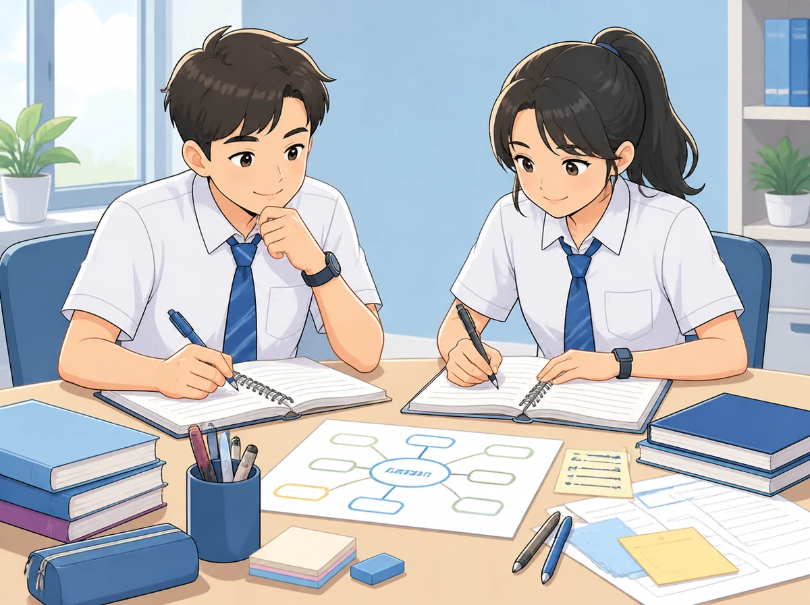

Pilih satu soalan untuk memulakan latihan.
Rekod tidak dapat disimpan pada peranti ini. Muat turun rangka atau simpan salinan rekod sebelum menutup laman.
Studio Penulisan Kendiri
Teman Menulis G3
Rancang. Tulis. Berjaya.
Bina keyakinan dalam penulisan karangan, selangkah demi selangkah.
